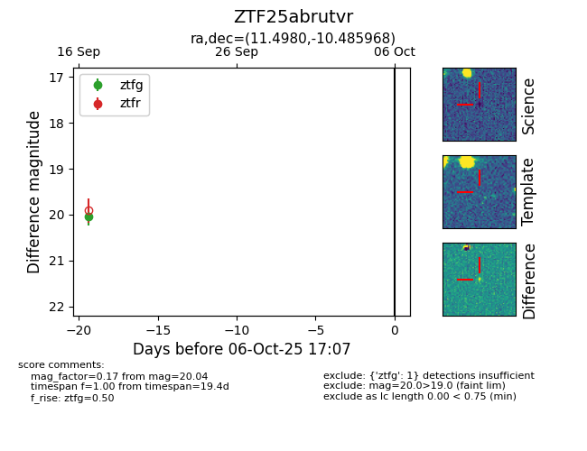

FINK: ZTF25abrutvr
Lasair: ZTF25abrutvr
ALeRCE: ZTF25abrutvr
ZTF25abrutvr (ztf,fink)
equatorial (ra, dec) = (11.4980,-10.48597)
galactic (l, b) = (118.2660,-73.30836)

last ztfg=20.04
1 ztfg detections